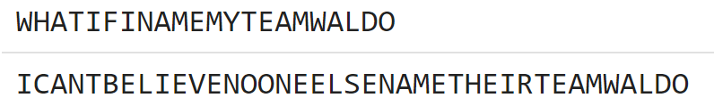
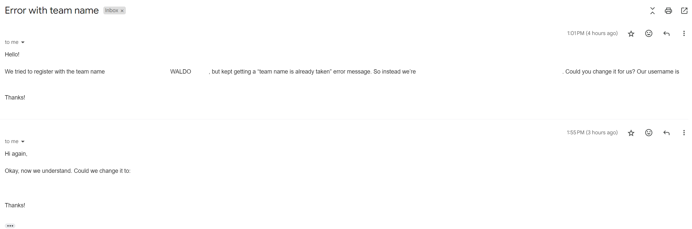

Solution: Find Waldo
Answer: GAGS
Written by Jonathan
The flavortext hints at finding Waldo within team names, there are 4 team names that have the substring “Waldo”, each with a different puzzle solved count from 1 to 4:
Waldorks
Buchwaldoboletus
Oswaldo
Awa L Dolores
(Note that Awa might be hard to find, but that’s intentional, and after finding 1, 2 and 4 teams should be able to guess that it would be a team with solve count of 3 and narrow down the search space. In practice, because we "pre-solved" some puzzles for these teams ahead of time, they also always appeared at the top of the group for their respective solve counts. In this way, teams would be expecting to search for spaces when going to search in other hunts as well)
Looking at the team members, we find that they reference old puzzlehunts. We can go to these puzzlehunts and repeat the same thing, to find Waldo again in the team names:
| Team Name in Puzzle Rojak 2 | Puzzle Solved Count | Referenced Hunt | Team Name | Team Member |
|---|---|---|---|---|
| Buchwaldoboletus | 4 | Huntinality 2023 | Library Card Renewal Done | G |
| Awa L Dolores | 3 | Shardhunt 2023 | Waldorf Astoria | A |
| Waldorks | 2 | Galactic Puzzle Hunt 2023 | Oswald of Carim | G |
| Oswaldo | 1 | Brown Puzzlehunt 2024 | Withdrawal Doubts | S |
Looking at the team members again, each hunt has a single member on the Waldo teams, each being a single letter. Ordering by solve count of the original teams, we get the answer GAGS. Yes, Waldo was just laughing at everyone from afar :)
Author's Notes
I like the idea of riffing off finding Waldo, we did it in the prepuzzle in Puzzle Rojak 1, and there were tons of comments saying they expected to actually find Waldo on the site somewhere, and I decided to make it a puzzle for Puzzle Rojak 2. The idea of using our team name on hunt sites was to be used in Puzzle Rojak 1, in fact, I even hid the first part of it preemptively in Galactic’s hunt 1 year early. For anyone that wants to try, the idea then was going to be Printer’s Devilry using anagrammed of hunt name + 1 extra letter, with the extra letter used for extraction. It was quite ridiculous, and hunt names just aren't great for Printer's Devilry (just look at QoDE lol), so unsurprisingly it fell through.
Somehow we forgot to start early enough, and we actually almost ran out of hunts to seed information in. Thankfully the team from 17th Shard became our testsolvers so we could alter our team name after the fact. We were expecting multiple hunts in the first half of this year (e.g. Microsoft Puzzlehunt and Grand Hunt Digital). I was also very anxiously waiting for Brown Puzzlehunt to close team registrations (in case somehow another team with substring WALDO showed up), and I had to wait 2 extra weeks before that happened. We had a backup in place here, and we were also prepared to use CMU Spring hunt as well (by appending (S) to our team name) but thankfully we did not need either, as we did not finish either hunt and appeared very far down the leaderboard woops. We very nearly did not finish Brown Puzzlehunt either, our team has been shrinking and 4 members for a hunt with up to 12 members was rough.
I thought I'll also take this question:

{kind=link}
and answer it with this:

{kind=link}
We had a quick check for Waldo substrings in team names, and also set up a "Waldo got triggered" notification in Discord. We counted 4 teams trying to create a team with Waldo in their name, with the first triggered just 1 minute after the hunt started, and the relevant team from the email above triggered it back to back 6 times in quick succession. We admire your tenacity!